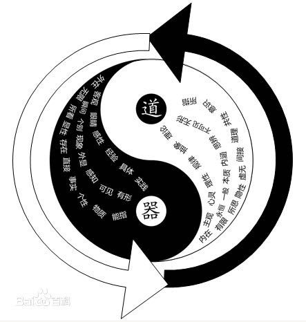

形而上下的定义
形而上(metaphysics), 形而下(physics).
当代中国儒家：其理论继承自，《易经》中的："形而上者谓之道，形而下者谓之器"。认为形而上者道（一切形式之上的本质是实践，实践是检验真理的唯一标准）、形而下者器（一切形式之下的本质是物质，物质是世界的本源，物质第一性）。

在世界万物形成之前，物质还没有可见的形状，这是"形而上"，即有形物质形成之前的物质，《易经》中把这种状态中的物质叫做"道"。"道"是无形的物质实体，是世界万物的本质、根源和本体。因为它是一种物质，所以我们可以把它叫做本质物质；当本质物质、本体或"道"发展变化为万物以后，物质具有了可见的形状，这就是"形而下"，即有形以后的物质，《易经》中把这种状态中的物质叫做"器"。"器"就是拥有具体形态、形体、质量和硬度的世界万物，我们可以把它叫做现实物质。"道"是"器"的根源、本质和本体，"器"是"道"的发展态。
研究和论述形而上学，首先要通过对现实世界中的各种事物进行全面而又准确的认识和界定后，才能够推断本质物质的有关情况，这种学说认为事物在本质上是不变的。
形而下学的理论根据就是现实世界中的各种事物，它主要是以万事万物为线索，根据物质的运动、发展和变化情况，研究和认识各种事物并解释现实问题，这种理论认为世界中的所有事物都是变化的。
形而上学试图揭示组成物质世界的本体的不变性，形而下学揭示了物质在现实世界中的变化性。总之，在这里的形而上学实际上就是我们今天讲的唯心哲学，它和形而下学的关系类似于今天我们政治课本上讲的唯物与唯心的关系。
唯物主义哲学： 由“形而上学”的概念而逆向推演来的概念，形而上学即：形而上学，指研究科学以外的、没有形体、不可证明的事物，是脱离实践的，用“孤立、静止、片面的观点”观察事物的思维方式。反之，形而下学便是：“对可证明的客观实在进行的研究分析，是一种具体地、客观地、运动地观察方法和思维模式。“